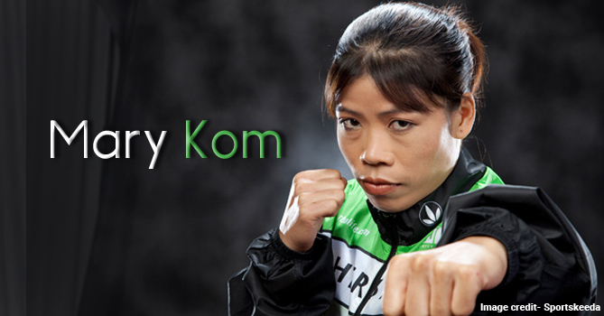

A sportswoman who has made India proud with her glorious achievements.

Don't let anyone tell you , you are weak
because you are a woman
About
...........................
The Carrer of the magnificent Mary started now after struggling a long time of 12 years and relative ambiguity. She is now cheering her success as a Brand Mary and one of the most famous Indian icons. Winnong the four successive gold medals in achivements. Just because of her successive struggle she got selected in the London's Olympic championships was her previous and most prominent
achivements. Just because of her successive struggle she got selected in London's Olympic championship of women's boxing. She became successful in getting the medal in each edition of the AIBA (means Association International de Boxe Amateur) women's world boxing championships. Mary kom, an Indian boxer hailing from Manipur, is a five time world Amateur Boxing champion. She is the only India boxerto have qualified fro the 2012 summer olympics, competing in the flyweight 51Kg category and winning the bronze medal.
She has also been ranked as No.4 AIBA World Women's Ranking Flyweight category. She became the first Indian woman boxer to get a Gold Medal in the Asian Games in 2014 in Icheon South Korea.
ACHIEVEMENTS
...........................
- Mary Kom won the gold medal first time in the Asian Games 2014 for flyweight 48 to 51 kg.
- Third position in the year 2012 for 51 kg for the Summer Olympics at London, United Kingdom.
- First position in the year 2010 for 48 kg for the Women’s World Amateur Boxing Championships at Bridgetown, Barbados.
- First position in the year 2009 for 46 kg for the Asian Indoor Games at Hanoi, Vietnam.
- Second position in the year 2008 for 46 kg for the Asian Women’s Championships at Guwahati, India.
- First position in the year 2005 for 46 kg for the Women’s World Amateur Boxing Championships at Podolsk, Russia.
- First position in the year 2005 for 46 kg for the Asian Women’s Championships at Kaohsiung, Taiwan.
- First position in the year 2004 for 46 kg for the Women’s World Cup at Tønsberg, Norway.
- First position in the year 2002 for 45 kg for the Women’s World Amateur Boxing Championships at Antalya, Turkey.
And many more.......
AWARDS AND RECOGNITIONS
...........................
- Padma Bhushan award for Sports in the year 2013.
- Arjuna Award for Boxing in the year 2003.
- Padma Shree award for Sports in the year 2006.
- CNN-IBN and Reliance Industries’ Real Heroes Award in the year 2008.
- Titled as the Magnificent Mary, AIBA in the year 2008.
- Rajiv Gandhi Khel Ratna award in the year 2009.
- Sahara Sports Award for Sportswoman of the year in the year 2010.
And many more.....
Learn More .........